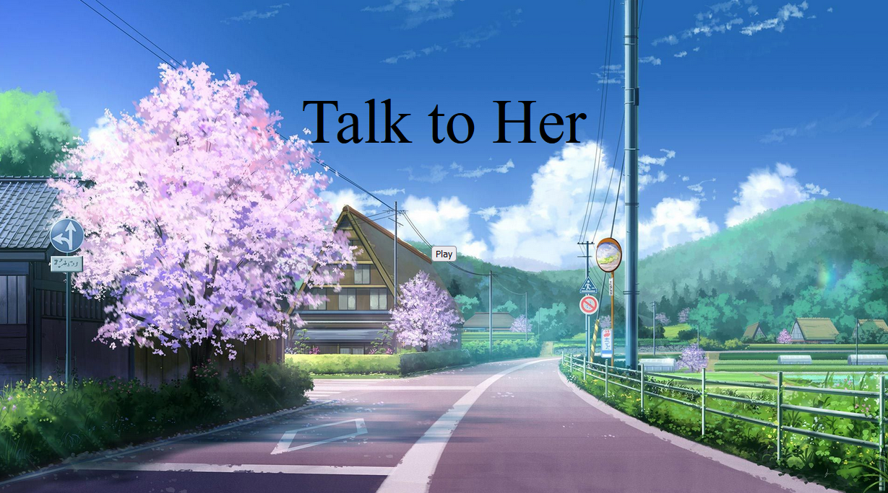
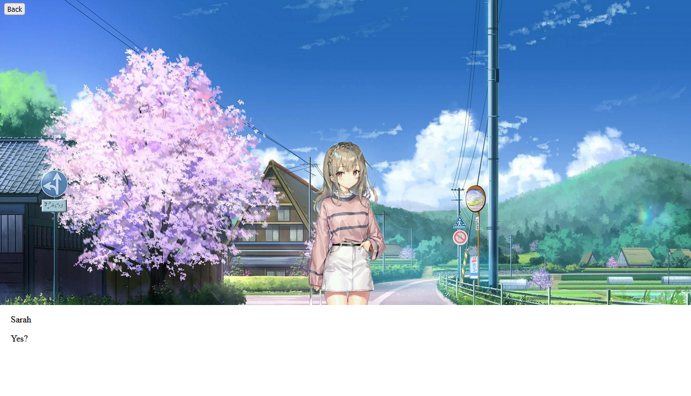

StoryNodes
- A passion project I dabble with during my free time.
- Made with HTML/CSS/JavaScript
- This is a web editor for creating narrative games and branching dialogue.
- The main site of StoryNodes can be found here
How the dialogue editor looks like
Scripting and Functionality
- Create and Import json files as project files.
- Has accompanying applications, such as localization, to support the main application.
- Builds a packaged zip folder containing built files, for combining with web projects provided in the main site.
- The Unity importing tool is an ongoing work in progress
What a built web project can look like with some art assets applied


Trials and Tribulations
- The project started as a Unity plugin, but functionality overscoped to the point Unity Editor Scripting became a hinderance.
- After breaking the project away from Unity, it became a way for me to learn web development.
- As my familiarity with web development grew, so did the features I envisioned for this tool.
- Creating teaching tools too early was a mistake, since they very quickly became outdated as this tool evolved.
- While there was consideration to make this a server based application, I ultimately did not want to deal with account management, at least not yet.